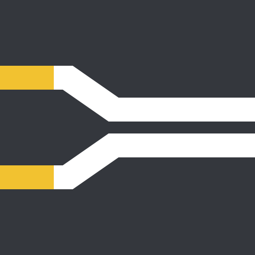

ADP.HawtaEngineering / Explorer
Select a stage to inspect it.Illustrative flow
01 SOURCES
Dealer DMS
Orders, stock, sales & customers
File feeds
Parts, stock & campaigns
CSV or Parquet inputExample: metadata match → skip full readApp databases
Vehicles · Services · Identity
Document sources
Example: activity records
02 SHARED SNAPSHOT
ADP.HawtaDuckDB
Collect & stage
Scheduled reads, with bounded parallel fetching.
Reconcile the snapshot
Compare records. Merge changes.
Keep what each source said.
Shape for consumers
Serving projections turn source tables into ADP models.
03 CONSUMERS
SERVE
Cosmos DB
Replicate changes for Hawta-owned data families.
Application lookups
PUBLISH
Versioned Parquet
Publish a consistent set of source
and serving tables for readers.
Reports · Analytics · Checks
App-owned records → existing app replication → Cosmos DB
One writer per data familyIllustrative scenario